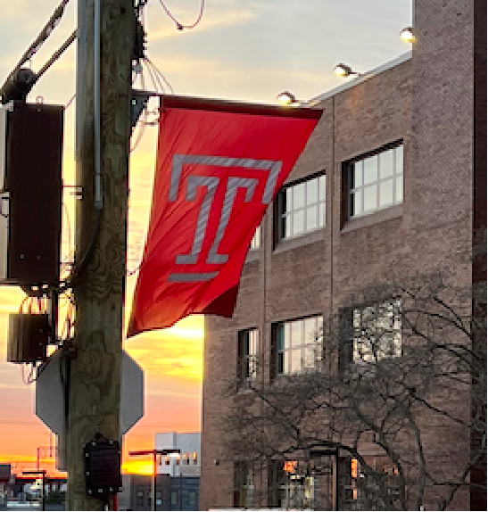

⚡ STEM Data Science
Temple University · Summer Program · High School
Click any button to open the notebook on the hub.
📚 Activities & Labs
🔬 Lab 00
Introduction to Data Science
🔬 Lab 01
Introduction to Python as a Tool
🧮 Lab 02
Data types — numbers, strings, arrays
🗃️ Lab 03
Tables — organising & analysing data
⚙️ Lab 04
Functions
🎲 Lab 05
Probability, Simulation & Hypothesis Testing
🌿 Plant Similarity: Photo Investigation
Plant Identification
📖 Your Code Library
For all your coding needs :)
🧠 Reviews
Review for Lab 00
alright beans
Review for Lab 01
cool beans
Review for Lab 02
cooler beans
💪 Exercises
Exercises 01
Supplemental for Lab 01
Exercises 02
Supplemental for Lab 02
Exercises 03
Supplemental for Lab 03
Exercises 04
Supplemental for Lab 04
Exercises 05
Supplemental for Lab 05
😱 Final Project
View Datasets
I love numberz
Submit Group Choice
No refunds lol
View Groups
In case you forgot
Example Final Project
For your reference
🔒 Instructor
📊 Dashboard
Instructor Submission Dashboard
🔗 Resources
Inferential Thinking — Online Textbook
Datascience Table Reference
Data Science Primer
EDS Course Website